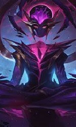

Es un juego de combate multijugador en el que se enfrentan 2 equipos de 5 integrantes.
El objetivo del combate es la destrucción del nexo enemigo, elemento que permite la conexión
entre los jugadores y los personajes de acción.
Al iniciar la sesión, cada jugador deberá invocar a un campeón para poder participar en la contienda
Las habilidades de este gladiador se fortalecerán durante la batalla. El video juego posee 4 campos de justicia en donde se desarrollan los enfrentamientos.
Hay distintos modos de juego, pero la verdadera emocion se encuentra en las partidas clasificatorias, donde demuestras si eres el mejor.
En las imagenes de abajo podras observar algunos de mis personajes favoritos, en especial Kayle, una angel que se dedica a repartir su justicia a traves de su espada.
- 
Funciones de los Campeones
Hay 6 funciones básicas que son desempeñadas por los campeones durante el enfrentamiento. Afortunadamente la versatilidad de algunos personajes les permite cubrir dos o más de estos propósitos concediéndole ventajas a su escuadrón para poder hacerse con la victoria. Seguidamente encontrarás una breve descripción de cada uno de estos roles.Magos: Sus habilidades de amplio alcance les permiten destruir a los enemigos y derribar objetos. Su nivel de defensa es bajo.
Tiradores: A través de ataques a distancia, logran derribar a un enemigo a la vez. Carecen de movilidad y escudos de defensa.
Tanques: Ideales para el combate cuerpo a cuerpo por sus altos niveles de defensa; sin embargo no consiguen hacer mucho daño. Su función es servir de escudo para neutralizar a los enemigos y proteger a los magos y tiradores. Suelen ubicarse al frente de los enfrentamientos.
Peleadores: Son similares a los tanques, pero disponen de un mejor balance entre sus mecanismos de defensa y ofensiva.
Soportes: Apoyan al equipo fijando escudos, otorgando curaciones y facilitando la visibilidad del mapa. También afectan el desenvolvimiento del equipo contrario a través de sus habilidades de control de masas que les permiten desorientar e inmovilizar a los oponentes.
Asesinos: Son los más agiles de todos los campeones y requieren poco tiempo para eliminar a cualquier enemigo. Lamentablemente son muy frágiles.